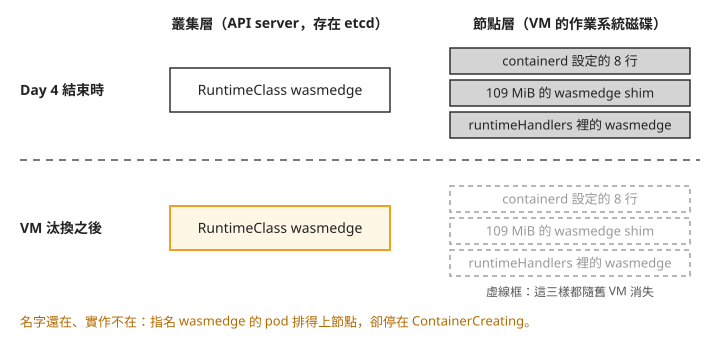
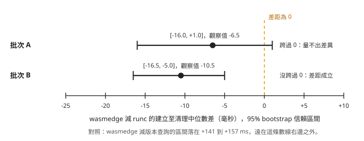
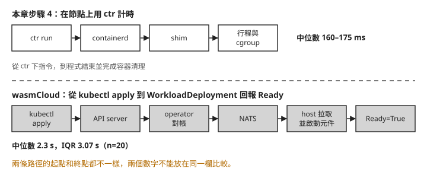

Day 5: 量測 wasm 與容器的成本——對照組、信賴區間與 shim 的記憶體¶

你大概讀過這類說法：「wasm 冷啟動比容器快一個數量級」「wasm 比容器輕」。想在自己的叢集上驗證，最直接的做法是拿同一支程式，一次編成 wasm 交給 Day 4 裝好的 wasmedge shim，一次編成一般執行檔交給 runc，各啟動 50 次。結果出來，wasmedge 的中位數是 167 毫秒，runc 是 173.5 毫秒。可以說 wasm 快了 6.5 毫秒嗎？再跑一批，換成快 10.5 毫秒。這點差距是否只是量測的波動？
這一章在一顆節點上比較容器建立、執行到清理的總時間與記憶體，再說明映像大小的比較條件，重點放在每個數字量完之後要問的問題：量具本身有多少雜訊，差距有沒有大過雜訊，兩個數字是不是在同一個條件下量的。讀完之後，拿到兩組啟動時間或記憶體讀數時，你能判斷差距能不能拿來排名，也能說出 wasm 容器在節點上的記憶體花在哪裡。
步驟 1: 先確認 Day 4 的 shim 還在不在¶
Day 4 在節點上裝了 109 MiB 的 wasmedge shim、在 containerd 設定裡加了 8 行，也建了 wasmedge 這個 RuntimeClass。動手量之前，先在本機執行 kubectl get node -o jsonpath='{.items[0].status.runtimeHandlers[*].name}'。這個完整 JSONPath 取自重裝腳本 42-reinstall-wasmedge.sh 第 55 行；runtimeHandlers 是 kubelet 回報節點有哪些 handler 的欄位。
如果清單裡有 wasmedge，再照 Day 1 步驟 3 的方式確認 shim 檔案與 containerd 設定仍在；三者都正常就直接進入步驟 2。若有缺失，再依本步驟末尾的 Day 4 連結補齊缺少的部分，不要重複加入已存在的設定。
如果兩章之間節點 VM 被替換，寫在舊 VM 磁碟上的安裝與設定可能消失。以下保留一組缺失時的對照紀錄：用 Day 1 的指令將目前狀態存成 day5-s0- 開頭的檔案，再與基準比對。區塊裡的 {…runtimeHandlers} 是不可照打的簡寫，查詢時請使用上方的完整 JSONPath。
$ diff <Day1 基準>/baseline-containerd-config.toml day5-s0-containerd-config.toml
（無輸出,exit=0） ← 與 Day 1 基準逐字相同
$ cat day5-s0-shim-binaries.txt
-rwxr-xr-x 1 root root 8805376 /usr/bin/containerd-shim-runc-v2
-rwxr-xr-x 1 root root 10015640 /usr/bin/runc
← 那支 109 MiB 的 shim 不見了
$ kubectl get node -o jsonpath='{…runtimeHandlers}'
['', 'runc', 'untrusted'] ← wasmedge 不在了
這組紀錄中，containerd 設定和 Day 1 基準逐字相同，shim 檔案不在，runtimeHandlers 裡也沒有 wasmedge。遇到這三項都缺失的情況，才需要重做完整安裝。
再看叢集這一側：
$ kubectl get runtimeclass
kata-vm-isolation kata
runc runc
wasm-day1-runc runc
wasm-day1-untrusted untrusted
wasmedge wasmedge ← 還在
wasmtime-spin-v2 wasmtime-spin-v2
wasmedge 這個 RuntimeClass 還在。RuntimeClass 是存在 etcd 裡的叢集物件，不會因為換了 VM 就消失。下面這張圖把兩側放在一起，上排是 Day 4 結束時，下排是 VM 換過之後：

我們可以從圖上看到，VM 換過之後，叢集處於「名字還在、實作不在」的狀態。這跟 Day 1 看到的 kata-vm-isolation 是同一類問題：API server 不會檢查 RuntimeClass 指向的 handler 在節點上存不存在，本例沒有排程標籤限制，Pod 排上節點後會因 handler 缺失而停在 ContainerCreating；Day 1 的 Kata 例子則先被 selector 擋在排程階段。要判斷 handler 在不在，看節點的 runtimeHandlers，不要看 kubectl get runtimeclass。遇到這個狀況的處理方式見疑難排解：VM 換過之後，RuntimeClass 還在但 pod 起不來。
本課在 az aks stop／start 後觀察到節點替換，不代表每次停止、啟動都一定更換 VM。節點映像升級、spot 節點被回收也會換掉 VM，可以預期同樣的結果，但本課沒有實際驗證。
這個結果也影響 Day 8 的做法。Day 8 要移除 SpinKube，再把節點的 containerd 設定和 Day 1 的基準逐字比對，確認拆得乾淨。如果比對期間換了 VM，結果相同也可能只是新節點沒有安裝過那些元件。所以 Day 8 的移除和比對要在同一個 VM 生命週期內做完，中間不能停機。
需要補回缺失項目時，依序參照 Day 4 的安裝 shim、設定 handler與映像解包設定。RuntimeClass 還在時，不必重建它。裝完在本機執行完整指令 kubectl get node -o jsonpath='{.items[0].status.runtimeHandlers}'，runtimeHandlers 裡應該又出現 wasmedge，確認後進入步驟 2。
步驟 2: 一份原始碼，三個目標¶
Day 4 發現 wasm 有兩種格式：wasmedge shim 只吃 core module，wasmCloud 只吃 component。網路上現成的範例程式各自編成其中一種，拿兩支不同的程式比，量到的差距可能來自程式本身。所以這一章自己寫一支程式，從同一份原始碼編出三個版本。
Rust 用 target triple 指定要編給哪一種執行環境，它是一串用連字號串起來的名字，寫出 CPU 架構、作業系統和執行環境。這裡用到三個：
| target triple | 產出 | 給誰跑 |
|---|---|---|
wasm32-wasip1 |
core module | wasmedge shim |
wasm32-wasip2 |
component | wasmCloud |
x86_64-unknown-linux-musl |
靜態連結的 Linux 執行檔 | runc |
原生版要是 linux/amd64 的執行檔，所以在叢集裡開一顆裝了 Rust 工具鏈的 pod 來編：
apiVersion: v1
kind: Pod
metadata:
name: builder
namespace: wasmlab
spec:
restartPolicy: Never
containers:
- name: rust
image: rust:1-bookworm
command: ["sleep", "infinity"]
musl 是 Linux 的 C 標準函式庫；這裡把需要的函式一起連結進執行檔，讓空映像也能執行。進到 pod 之後，先裝 musl 的工具，再開一個新專案：
apt-get update -qq
apt-get install -y -qq musl-tools
mkdir -p /work && cd /work
cargo new --bin payload
cd payload
程式有兩種模式。不帶參數時印一行就結束，計時涵蓋這次容器建立、程式執行與清理完成；帶 stay <秒數> 時會停住不結束，讓我們有時間去讀它佔了多少記憶體。把 src/main.rs 換成：
fn main() {
let args: Vec<String> = std::env::args().skip(1).collect();
if args.first().map(String::as_str) == Some("stay") {
let secs: u64 = args.get(1).and_then(|s| s.parse().ok()).unwrap_or(300);
println!("cnp-sprint3-day5 payload: resident for {secs}s");
std::thread::sleep(std::time::Duration::from_secs(secs));
return;
}
let who = if args.is_empty() { "world".to_string() } else { args.join(" ") };
println!("cnp-sprint3-day5 payload: hello {who}");
}
Cargo.toml 的 release 設定控制最佳化方式。三個版本共用縮小產物、跨模組最佳化、移除符號與 panic 時直接結束的選項，避免編譯選項成為另一個差異：
然後一次編出三個目標：
# one crate, one release profile, three target triples
rustup target add wasm32-wasip1 wasm32-wasip2 x86_64-unknown-linux-musl
for T in wasm32-wasip1 wasm32-wasip2 x86_64-unknown-linux-musl; do
cargo build --release --target "$T"
done
三次建置使用相同原始碼與 release 選項，改變的是 target triple；各目標仍會連入不同的標準函式庫與執行期支援。後面量到的差距，就不會是「兩支程式寫得不一樣」造成的。
打包成映像¶
三個成品要包成 OCI 映像，containerd 和 wasmCloud 才拉得到。rootfs 是容器看見的檔案系統；這裡用 tar 打包。artifact 泛指 registry 裡儲存的成品，不一定是 Linux 容器映像。本課包了四個：
| 後綴 | 內容 | 給誰 |
|---|---|---|
-wasm |
core module，空 base，tar rootfs | wasmedge shim |
-native-scratch |
原生執行檔，空 base，tar rootfs | runc，無 base image |
-native-debian |
原生執行檔疊在 debian:12-slim 上 |
runc，有 base image |
-comp |
component，application/wasm artifact |
wasmCloud |
-wasm 和 -native-scratch 用的是同一套打包方式：一層 tar，裡面只有那一個檔案，沒有任何 base image。兩者的映像大小要能比較，這是前提；如果一邊多疊了一層作業系統，比到的就是那層作業系統的大小。-native-debian 是另一種對照，代表一般疊在 Linux 發行版上的應用容器。
打包用 crane（v0.21.9）和 oras（v1.3.3）兩個工具，在 builder pod 裡執行。先在 builder 安裝對應版本：
curl -sSL https://github.com/google/go-containerregistry/releases/download/v0.21.9/go-containerregistry_Linux_x86_64.tar.gz | tar xz -C /usr/local/bin crane
curl -sSL https://github.com/oras-project/oras/releases/download/v1.3.3/oras_1.3.3_linux_amd64.tar.gz | tar xz -C /usr/local/bin oras
本課推到 ttl.sh，這是不用帳號的臨時 registry，tag 寫 1h 代表映像一小時後自動刪除，量測要在這段時間內做完；想留久一點，換成自己的 registry。<prefix> 換成一串自己的隨機字：
mkdir -p /out
cp target/wasm32-wasip1/release/payload.wasm /out/payload-wasip1.wasm
cp target/wasm32-wasip2/release/payload.wasm /out/payload-wasip2.wasm
cp target/x86_64-unknown-linux-musl/release/payload /out/payload-native
cd /out
R=ttl.sh/<prefix>
tar --owner=0 --group=0 --mode=0755 -cf wasm-layer.tar --transform 's,payload-wasip1.wasm,payload.wasm,' payload-wasip1.wasm
tar --owner=0 --group=0 --mode=0755 -cf native-layer.tar --transform 's,payload-native,payload,' payload-native
crane append --oci-empty-base -f wasm-layer.tar -t "${R}-wasm-base:1h" --platform linux/amd64
crane mutate "${R}-wasm-base:1h" --entrypoint /payload.wasm -t "${R}-wasm:1h"
crane append --oci-empty-base -f native-layer.tar -t "${R}-native-base:1h" --platform linux/amd64
crane mutate "${R}-native-base:1h" --entrypoint /payload -t "${R}-native-scratch:1h"
crane append -b debian:12-slim -f native-layer.tar -t "${R}-debian-base:1h"
crane mutate "${R}-debian-base:1h" --entrypoint /payload -t "${R}-native-debian:1h"
echo '{}' > wasm-config.json
cp payload-wasip2.wasm payload.wasm
oras push "${R}-comp:1h" \
--config wasm-config.json:application/vnd.wasm.config.v0+json \
payload.wasm:application/wasm
比較大小時，分別記錄三個成品的檔名、位元組數與 SHA-256，以及每個映像的 reference、各 layer 的大小與 digest。檔案大小和映像 layer 大小分開記錄；映像只拿 -wasm 和 -native-scratch 這兩個打包方式相同的版本來比。
在 builder pod 裡執行以下指令，保存 ls -l 的檔案大小欄位，雜湊會寫入 /out/sha256.txt。這三行取自建置腳本 43-build-one-source.sh 第 60–62 行：
接著沿用打包時的 R，讀取各映像的 manifest 並存成 JSON；從 layers 裡記下 size 與 digest。以下逐字取自 45-package-and-push.sh 第 45–48 行：
for n in wasm native-scratch native-debian comp; do
echo "=== ${R}-${n}:1h"
crane manifest "${R}-${n}:1h" | tee "/out/manifest-${n}.json"; echo
done
步驟 3: 先量量具本身的雜訊¶
容器的單次總時間在節點上用 ctr 量。ctr 是 containerd 附的命令列工具，Day 4 用它查過映像。直接用 ctr 啟動容器，不經過 API server、scheduler 和 kubelet，計時從執行 ctr run --rm 到命令返回，包含命令列工具、RPC、容器建立、程式執行與退出清理。它沒有把純啟動階段分離出來，也不是服務能接收請求的時間。
用 node-shell 進到節點（Day 1 建的那顆特權 pod）：
NODE_SHELL_POD=$(kubectl -n wasmlab get pod -l app=node-shell -o jsonpath='{.items[0].metadata.name}')
kubectl -n wasmlab exec -it "$NODE_SHELL_POD" -- nsenter -t 1 -m -- bash
前面在 builder 的操作完成後，回到本機再進節點 shell。量測用獨立的 containerd namespace cnp5，跟 kubelet 用的 k8s.io 分開。先用 ctr -n cnp5 images pull 把 -wasm 和 -native-scratch 兩個映像拉到節點上，量測時就不會把下載時間算進去。
在開始量之前，要先回答一個問題：計時這件事本身要花多少時間、會晃動多少？ctr 每次要啟動一個新的行程、連到 containerd 再回來，這段時間不管跑什麼容器都會付。單一樣本的波動不能直接當成兩組差值的判定門檻，後面會用重抽樣估計差值的不確定性。
所以先量一組對照組（null control）：用同一支 ctr 下一個什麼都不做的指令 ctr version，只問 containerd 的版本，不建立任何容器。這組數字讓我們知道基本命令往返的耗時；它不是 runtime 差距必須超過的門檻。下面的採樣程式依驗證時的 48-measure-node.sh 改寫成直接展開的形式（改寫版本本課沒有實跑），先量 50 次對照組，再交錯量兩個 runtime。這份程式沒有檢查每次命令是否成功，失敗也會記下時間，因此不能直接拿來收集新的有效樣本：
W=ttl.sh/<prefix>-wasm:1h
C=ttl.sh/<prefix>-native-scratch:1h
# warm-up so the first sample is not paying for page cache
ctr -n cnp5 run --rm --runtime io.containerd.wasmedge.v1 "$W" warm-w >/dev/null 2>&1
ctr -n cnp5 run --rm "$C" warm-c >/dev/null 2>&1
for i in $(seq 1 50); do
t0=$(date +%s%N); ctr -n cnp5 version >/dev/null 2>&1; t1=$(date +%s%N)
echo "harness $(( (t1 - t0) / 1000000 ))"
done
for i in $(seq 1 50); do
t0=$(date +%s%N); ctr -n cnp5 run --rm --runtime io.containerd.wasmedge.v1 "$W" "w$RANDOM$i" >/dev/null 2>&1; t1=$(date +%s%N)
echo "wasmedge $(( (t1 - t0) / 1000000 ))"
t0=$(date +%s%N); ctr -n cnp5 run --rm "$C" "c$RANDOM$i" >/dev/null 2>&1; t1=$(date +%s%N)
echo "runc $(( (t1 - t0) / 1000000 ))"
done
重新量測時，應先確認映像可執行，每次保留退出碼；失敗立即停止該組採樣並顯示錯誤，不得把失敗時間計入。這次歷史紀錄沒有逐筆退出碼，無法補證每個樣本都成功，因此下面數字只作方法與既有資料判讀，不能當成已通過這項條件的新效能結果。
有兩個細節值得注意。正式取樣前，每個 runtime 先各跑一次暖機，讓相關的檔案先進到記憶體的快取裡，第一個樣本不會因為讀磁碟而特別慢。另外，wasmedge 和 runc 是一個接一個交錯跑，不是先跑完 50 次 wasmedge 再跑 50 次 runc；如果量測途中節點變忙或變閒，可減少先後次序造成的偏差，但不能保證兩邊受到完全相同的影響。
整理這些樣本時用中位數和 IQR。中位數是把 50 個數字排好之後最中間的那個；IQR（四分位距）是排在第 75% 的數字減掉排在第 25% 的數字，也就是中間那一半樣本分布得多寬。不用平均數，是因為啟動時間有一個降不下去的最低值，偶爾又會冒出特別慢的一次，平均數會被少數幾個慢的樣本往上拉，不能代表「一般的一次」。
對照組的結果：
這批版本查詢的中位數是 16 毫秒，IQR 為 1 毫秒。它的變異較小，但不能據此把容器樣本的其他變異全部歸因給 runtime。
步驟 4: 建立、執行與清理，兩批各 n=50¶
同樣的程序跑兩批，每批各 50 個樣本。下面是兩批的統計，欄位依序是樣本數、最小值、第 25%、中位數、第 75%、最大值和 IQR（單位毫秒）：
=== 批次 A
label n min p25 median p75 max IQR
harness 50 15.0 16.0 16.0 17.0 30.0 1.0
wasmedge 50 147.0 156.0 167.0 178.5 197.0 22.5
runc 50 153.0 159.5 173.5 185.5 279.0 26.0
=== 批次 B
harness 50 15.0 16.0 16.0 17.0 28.0 1.0
wasmedge 50 147.0 154.0 161.0 169.0 196.0 15.0
runc 50 148.0 165.0 171.5 181.8 255.0 16.8
把五組中位數畫在同一把尺上：
wasmedge 和 runc 的長條幾乎一樣長，兩者都遠高於 16 毫秒的版本查詢對照值。兩批的中位數都是 wasmedge 略低，分別低 6.5 和 10.5 毫秒。問題在於：wasmedge 自己的 IQR 就有 15 到 22.5 毫秒，差 6.5 毫秒會不會只是這一批剛好抽到比較快的幾次？
用 bootstrap 估計差距的範圍¶
回答這個問題用的是 bootstrap 信賴區間。做法是拿手上這 50 個 wasmedge 樣本，從裡面隨機抽 50 次，每次抽完放回去（同一個樣本可以被抽到不只一次），得到一組「重抽」的樣本；runc 也一樣抽一組，算兩組中位數的差。這樣重複一萬次，就有一萬個差值。把最小的 2.5% 和最大的 2.5% 去掉，剩下的範圍叫 95% 信賴區間，意思是：以手上的資料來看，真正的差距大致落在這個範圍內。
判讀規則很簡單：區間跨過 0，代表「兩者一樣快」也在合理範圍內，這批資料分不出誰快；區間整個在 0 的某一邊，差距才算成立。亂數用固定的種子，同一份資料每次算出來的區間都一樣。
可在本機下載統計程式、批次 A與批次 B。以 python3 50-effect-vs-noise.py wasmedge runc < samples-node-n50.txt 重算 A，再換成 B 的檔名；這只分析已保存資料，不會連線叢集。兩批的結果：
=== 批次 A:wasmedge vs runc
observed difference = -6.5 ms
bootstrap 95% CI = [-16.0, +1.0] ms
verdict: NOT MEASURABLE (CI covers 0)
=== 批次 B:wasmedge vs runc
observed difference = -10.5 ms
bootstrap 95% CI = [-16.5, -5.0] ms
verdict: measurable
畫在一條數線上，橘色虛線是「差距為 0」：

照著圖看兩件事。第一，批次 A 的區間剛好越過 0，批次 B 的區間停在 -5，兩批的點估計都偏向 wasmedge 較短，區間也大幅重疊；差別是 A 包含 0、B 不包含 0，不能說效果方向相反。第二，就算採信批次 B，差距也在 5 到 16.5 毫秒之間，跟一次啟動的 160 多毫秒比，約占數個百分點，還要看這個差距對應用是否有實際影響。
同樣的方法拿來比 wasmedge 和版本查詢對照值：
wasmedge vs harness 批次 A CI = [+144.0, +157.0] ms measurable
批次 B CI = [+141.0, +149.5] ms measurable
wasmedge 比版本查詢對照值多出約 150 毫秒，兩批都很明確。
這組數字能說什麼¶
在這個條件下，兩組「建立、執行、清理」總時間的中位數約為 160–175 毫秒。A 的差值區間包含 0，B 不包含 0；現有資料支持的範圍有限，又缺少逐筆退出碼，不能用來宣稱一般的 wasm 冷啟動排名。
wasmedge 比版本查詢多出的約 150 毫秒，包含好幾個階段。本課沒有分段計時，不能判定其中多少來自 cgroup、shim、程式本身或清理。若要比較純啟動或 HTTP 可用時間，必須另選一致的開始與結束條件。
要檢查結果是否穩定，可在相同條件下增加獨立批次。每批維持相同的暖機、版本查詢與交錯採樣方式，依步驟 3 的要求保留退出碼與錯誤；把各批有效樣本分開保存，再用相同統計程式重算中位數、IQR 與差值的信賴區間。增加樣本與批次可讓估計更有依據，但不保證某一種判定一定成立。
步驟 5: 記憶體¶
shim 的記憶體：觀察並行容器增加時的用量¶
每個容器在節點上都有一個 shim 行程替它跟 containerd 溝通（Day 1 追過這條路徑）。要量 shim 吃多少記憶體，第一個想到的是 ps 的 RSS 欄位，但 RSS 會算錯：RSS 是一個行程用到的全部實體記憶體，包含跟其他行程共用的部分。wasmedge 的 shim 會分出好幾個行程，它們共用同一份程式碼，用 RSS 加總會把共用的部分重複算好幾次。
所以這裡用 PSS（proportional set size）：共用的頁面按共用的行程數平均分攤，每個行程只算自己那一份，加總起來就不會重複。PSS 可以從 /proc/<pid>/smaps_rollup 讀到：
（這會把節點上所有 shim 都算進去；本課只加總命令列裡帶 cnp5 的那些，也就是自己用 ctr 啟動的容器。）
實際使用的並行取樣腳本在節點執行，參數為打包時的 <prefix>，僅統計 cnp5 namespace 的 shim。它依序建立 1、2、3 個 stay 容器，每組等 6 秒再讀 PSS，清理後才換下一組。上面的泛用 pgrep 只是讀 PSS 的示意，不能直接拿它加總全節點來重現以下數字：
wasmedge n=1 shim_pss_KiB=49235 shim_procs=4
wasmedge n=2 shim_pss_KiB=58774 shim_procs=8
wasmedge n=3 shim_pss_KiB=68210 shim_procs=12
runc n=1 shim_pss_KiB=4709 shim_procs=1
runc n=2 shim_pss_KiB=9904 shim_procs=2
runc n=3 shim_pss_KiB=13885 shim_procs=3
以下是原紀錄從 1–3 個容器樣本推估的固定項與每容器增量。當時用「常駐」稱呼固定項，但沒有直接量過零容器時的用量，不能當成零負載實測，也不能直接套到任意容器數：
畫成長條圖：
圖上是直接量到的 PSS：1–3 個容器時，wasmedge 約 48–67 MiB，runc 約 4.6–13.6 MiB。這組樣本中，wasmedge 每個容器有 4 個 shim 行程，runc 有 1 個；這是本次樣本的正常觀察，不是故障。計數使用 pgrep -fc 'containerd-shim.*cnp5'，取自並行取樣腳本第 43 行，只計入命令列帶 cnp5 的 shim。同時跑 3 個容器時，兩種 runtime 分別數到 12 與 3 個行程；直接用 pgrep -fc containerd-shim 會混入其他 namespace 的容器。但資料沒有把每一頁記憶體的用途分開，不能把推估的固定項全歸給執行期程式碼。
固定項加上容器數乘以增量，可以作為這組樣本的近似模型。要用於更大規模的容量規劃，還要在目標容器數與工作負載下取樣；shim 檔案大小也不等於執行時的實體記憶體用量。
容器自己的記憶體¶
shim 之外，容器裡的程式自己用多少？cgroup v2 是 Linux 用來分組計帳與限制資源的機制，每個容器在它底下有自己的目錄，其中 memory.current 是目前算在這個容器頭上的記憶體，包含它與子 cgroup 的計帳用量及檔案快取等項目；它不是記憶體限制或峰值，也不能直接當作 RSS。
以下保留原有簡寫供核對，請勿照打。固定的 cgroup 路徑應改成先查容器 PID，再從 /proc/<pid>/cgroup 取得路徑；這段簡寫修正後的寫法本課沒有實跑。要重現既有量測，請使用後面從驗證素材逐字補入的完整程序：
ctr -n cnp5 run -d --runtime io.containerd.wasmedge.v1 "$W" memw /payload.wasm stay 120
ctr -n cnp5 run -d "$C" memc /payload stay 120
cat /sys/fs/cgroup/cnp5/memw/memory.current /sys/fs/cgroup/cnp5/memc/memory.current
以下取自記憶體取樣腳本第 12、19–40、48–51 行，在步驟 3 的節點 shell 執行，沿用已設定的 W、C。先定義讀值函式，再啟動容器、等 5 秒，查 PID 與 cgroup 路徑，讀值後清理：
NSP=cnp5
report() {
local id="$1" label="$2"
local pid cg path
pid=$(ctr -n $NSP task ls | awk -v i="$id" '$1==i{print $2}')
cg=$(cat /proc/"$pid"/cgroup | head -1 | cut -d: -f3)
path=/sys/fs/cgroup${cg}
echo "--- $label container=$id pid=$pid"
echo " cgroup = $cg"
echo " memory.current = $(cat "$path"/memory.current) bytes"
echo " memory.peak = $(cat "$path"/memory.peak 2>/dev/null || echo n/a) bytes"
echo " anon = $(awk '$1=="anon"{print $2}' "$path"/memory.stat) bytes"
echo " file = $(awk '$1=="file"{print $2}' "$path"/memory.stat) bytes"
echo " procs in cgroup = $(wc -l < "$path"/cgroup.procs)"
ps -o pid,rss,comm -p "$pid"
}
ctr -n $NSP run -d --runtime io.containerd.wasmedge.v1 "$W" memw /payload.wasm stay 120
ctr -n $NSP run -d "$C" memc /payload stay 120
sleep 5
report memw wasmedge
report memc runc
ctr -n $NSP task kill -s SIGKILL memw 2>/dev/null
ctr -n $NSP task kill -s SIGKILL memc 2>/dev/null
sleep 3
ctr -n $NSP c rm memw memc 2>/dev/null
以下保留原章節的讀值摘要；mem.txt 第 13–30 行記錄了對應的 PID、cgroup 路徑與讀值：
--- wasmedge
memory.current = 1601536 bytes (1.53 MiB)
PID RSS COMMAND
61034 15064 youki:[2:INIT]
--- runc
memory.current = 294912 bytes (0.28 MiB)
PID RSS COMMAND
61077 316 payload
同一份原始碼，wasm 版的 memory.current 是 1.53 MiB，原生版是 0.28 MiB，約 5.4 倍。wasm 版除了程式本身，還要在容器裡把 WasmEdge 執行期跑起來。下面的 ps 輸出是同一個行程的 RSS，跟上一節說的一樣包含共用的頁面，所以不拿來比較。
wasm 容器裡的行程名稱是 youki:[2:INIT]。youki 是一套用 Rust 寫的 OCI 容器執行期，runwasi 用它的函式庫來建立容器，所以行程名稱帶著它的名字。
磁碟¶
shim 檔案的大小：
/usr/bin/containerd-shim-runc-v2 8.4 MiB
/usr/local/bin/containerd-shim-wasmedge-v1 109.2 MiB (13.0 倍)
wasmedge 的 shim 大了 13 倍，這支檔案包含靜態連結的執行期。但磁碟大小不能換算為等量的常駐記憶體。
把這一步的數字放在一起看：wasm 檔案本身很小，但在節點上跑起來，本次量到的 shim PSS 與容器 cgroup 用量都比 runc 高。做容量規劃時要算的是跑起來之後的記憶體，不是 wasm 檔案的大小。
要注意這裡的 runc 對照組是空 base 的靜態執行檔，這個對照組沒有加上 Linux 發行版的檔案層。一般應用容器疊在 Linux 發行版上，結果可能不同；本課打包了 -native-debian，但沒有拿它來量。
wasmCloud 那一側：量不到單一元件¶
wasmCloud 的元件跑在 host 這顆 pod 裡，要量一個元件吃多少記憶體，得先有一顆沒跑過任何元件的 host。Day 2 看過，元件停掉之後記憶體不會還給 host 行程，跑過元件的 host 讀數已經被墊高。所以這裡刪掉一顆 host pod 讓它重建，每 4 秒讀一次新 pod 的記憶體，同時從 log 數它啟動了幾個 workload：
new host pod: hostgroup-default-…
t+4s working_set_bytes=4800512 workloads_started=0
…
t+160s working_set_bytes=4837376 workloads_started=0
160 秒內，新 host 一個 workload 都沒有分到。原因是 Day 3 看過的行為：wasmCloud 不會重新平衡，新加入的 host 不會分到既有的 workload。這樣做只會得到一顆一直空著的 host，正確的順序見疑難排解：乾淨的 host 一直分不到 workload。
能拿到的只有兩端：空 host 約 4.80 MB，帶著 6 個 workload 的 host 約 26.65 MB。那 6 個是 Day 2、Day 3 部署的 blobby 和 hello-world 混在一起，不是本章編的程式，不能除出每個元件多少。
步驟 6: wasmCloud 的啟動時間要放在哪一欄¶
對應的 WorkloadDeployment 範本把 image 改成自己的 -comp:1h reference；歷史採樣腳本則在本機透過 kubectl 執行，參數依序為 manifest 路徑與次數。這份腳本只供核對下列資料的採樣方式，沒有失敗逾時處理，也沒有確認 HTTP 就緒，不能直接當成服務啟動的測試工具。wasmCloud 的時間是這樣量的：刪掉 WorkloadDeployment，再 kubectl apply 一次，每 0.5 秒查一次狀態，計時到讀到 Ready=True，重複 20 次。終點不是首次 HTTP 成功，還包含輪詢間隔造成的等待：
中位數 2.3 秒，IQR 3.07 秒，晃動的幅度比中位數本身還大。
這個 2.3 秒不能跟步驟 4 的 160 到 175 毫秒放在同一欄比。下面這張圖把兩條路徑並排，上面是步驟 4 計時的範圍，下面是 wasmCloud 這組數字計時的範圍：

照著圖看：上排從 ctr 下指令算到容器執行與清理完成；下排從 kubectl apply 開始算，中間經過 API server、operator 的對帳迴圈、wasmCloud 內部用來傳訊息的 NATS，再由 host 拉取元件並啟動。兩組數字的起點、終點和經過的元件都不一樣，我們把這種差別叫做量測平面不同。量測平面不同的數字放進同一張表，讀者會以為 wasmCloud 慢了十幾倍，其實是量了不同的東西。
若要比較到 Ready 的控制路徑時間，得讓 wasmedge 也從 kubectl apply 一個 Pod 開始計時，走完 API server、kubelet、CRI 到 shim 的整條路徑。兩邊還須定義可比的 Ready 條件；若比較服務可用性，應改以成功回應同一種請求為終點。本課沒有做這組量測。
這些數字能用到哪裡¶
本章的結論有幾個前提，引用時要一起帶上：
- 只有一顆節點、一支印一行就結束的程式。程式沒有 I/O、沒有網路，也不配置大量記憶體，結論不能直接推到真實的應用。
- 計時涵蓋建立、執行與清理；兩批差值的信賴區間有重疊，一批包含 0、一批不包含 0，且缺逐筆退出碼，不能宣稱一般啟動排名。
- 容器的對照組只有空 base 的靜態執行檔，沒有量疊在 Linux 發行版上的版本。
- 映像大小沒有數字。
- wasmCloud 的啟動時間和每個元件的記憶體，都沒有跟另外兩者放在同一個條件下量到。
疑難排解¶
VM 換過之後，RuntimeClass 還在但 pod 起不來¶
症狀：前一天裝好、驗過能跑的 wasmedge RuntimeClass，叢集停機再啟動之後，kubectl get runtimeclass 照樣列得出來，但指名它的 pod 都停在 ContainerCreating，訊息是 no runtime for "wasmedge" is configured。
原因：RuntimeClass 存在 etcd，handler 的實作（containerd 設定和 shim 檔案）寫在 VM 的磁碟上，換了 VM 只剩前者，見步驟 1。
修法：用 kubectl get node -o jsonpath='{.items[0].status.runtimeHandlers}' 確認 handler 不在之後，照 Day 4 的安裝 shim、設定 handler 與映像解包設定重裝。手動對節點做的任何改動，都要假設下一次換 VM 時會消失。
乾淨的 host 一直分不到 workload¶
症狀：為了量 wasmCloud 單一元件的記憶體，刪掉一顆 host pod 換一顆新的，等了 160 秒，workloads_started 一直是 0。
原因：wasmCloud 不重新平衡（Day 3 量過），新加入的 host 不會分到既有的 workload。刪 pod 換新的，只會得到一顆一直空著的 host。
修法：先準備好乾淨的 host，再部署一個新的 WorkloadDeployment，順序不能反。另一種做法是把 host group 縮到 1 顆，讓所有 workload 集中在同一顆 host 上，再一個一個加上去，每加一個讀一次記憶體。
想一想¶
- 同事在另一顆節點上跑了一批 n=30，wasmedge 的中位數比 runc 快 12 毫秒，想在報告裡寫「wasm 啟動比較快」。在同意之前，你會請他補哪些數字？
- 一顆節點預計同時跑 20 個 wasmedge 容器。估算 shim 要吃多少記憶體時，109 MiB、38.8 MiB、9.3 MiB 這三個數字各該怎麼用？如果換成 20 個 runc 容器呢？哪些是直接量到的值，哪些只是超出 1–3 個容器範圍的試算，還需要怎樣驗證？
- 週一早上，指名
wasmedge的 pod 全部停在ContainerCreating，kubectl get runtimeclass卻看得到wasmedge。週末叢集停過機。你會先查哪一個欄位？
小結¶
比較快慢，要先對齊計時起點、終點與成功條件。本章的 ctr run --rm 包含建立、執行及清理，wasmCloud 則量到狀態被查為 Ready，兩者不能直接排名。版本查詢的 16 毫秒是對照資訊，不是差距的最低門檻；差值要連同信賴區間與資料限制一起解讀。記憶體方面，這組小程式的 wasmedge shim PSS 與容器 cgroup 用量較高，但 1–3 個容器的推估不等於大規模容量公式。每個結論都要連同工作負載、版本與取樣範圍使用。
延伸閱讀¶
想再深入，可以從這幾份開始：
- containerd 的 shim 說明 —— shim 為什麼是獨立的行程、containerd 重啟為什麼不會停掉容器，以及 shim 的生命週期。步驟 5 量到的 shim 行程數和常駐記憶體，可以從這裡理解。
- containerd/runwasi —— 本章量的 wasmedge shim。
crates/containerd-shim-wasmedge底下看得到它用 youki 建立容器，也就是 cgroup 裡那個youki:[2:INIT]的來源。 - Linux 核心的 /proc 文件 ——
smaps_rollup裡 PSS 和 RSS 的定義。量好幾個行程共用記憶體的程式時，用 RSS 加總會高估。
下一步¶
wasmCloud 和 WasmEdge 兩條路線的成本到這裡都量過了：容器計時範圍與資料完整性仍有比較限制，記憶體則是本次 wasmedge 樣本較高。Day 6 走最後一條路線 SpinKube，它會用 operator 自動把 shim 裝上節點；那一天要看的是，自動化之後節點上被改了什麼、又留下什麼。
WebAssembly 標誌為 WebAssembly 專案之官方資產(CC0 1.0),此處作社群教學用途。